# import packages
library(tidyverse, warn.conflicts = F)
library(broom)
library(GGally)
library(patchwork)
library(kableExtra)
library(psych)
library(ggpubr)Life-Expectancy
1 Introduction
Life expectancy rate is a measure to indicate the general life span of population.
Because it talks about life span, life span also indicates overall health of the population.
But it remains a question what factors affect life expectancy.
Life expectancy is usually associated with income per capita.
1.1 Questions
What is the relationship between two continuous variables? How much of the variation in one variable is explained by another variable? What is the predicted value of one variable based on the values of one or more other variables? What is the direction and strength of the relationship between two variables? Are there any outliers or influential points in the data? How accurate are the predictions made by the regression model? How do changes in one variable affect changes in another variable? What is the slope and intercept of the regression line? Are the coefficients statistically significant? How well does the model fit the data?
2 Dataset
The dataset was taken from Kumar Ajarshi via Kaggle.
# import dataset
lifeExpectancyRaw <-
read_csv("datasets/life-expectancy.csv",
# don't show col types
show_col_types = F)
# convert col names
names(lifeExpectancyRaw) <-
names(lifeExpectancyRaw) %>%
# into lowercase
tolower() %>%
# change space with period
make.names()
# check dimension of raw dataset
lifeExpectancyRaw %>%
dim()[1] 2938 22The raw dataset contains 2,938 records and 22 variables.
# drop irrelevant columns
lifeExpectancyRaw <-
lifeExpectancyRaw %>%
select(-c(country, year, percentage.expenditure,
thinness_1to19years, thinness_5to9_years,
income.composition.of.resources))# check duplicated rows
lifeExpectancyRaw %>%
duplicated() %>%
sum()[1] 0# check missing values
lifeExpectancyRaw %>%
is.na() %>%
sum()[1] 2328Because the dataset contains missing values, I need to investigate further on which columns the missing values are.
# get missing values by cols
lifeExpectancyRaw %>%
is.na() %>%
colSums() %>%
data.frame() %>%
rename("count" = ".") %>%
arrange(desc(count)) count
population 652
hepatitisb 553
gdp 448
total.expenditure 226
alcohol 194
schooling 163
bmi 34
polio 19
diphtheria 19
life.expectancy 10
adult.mortality 10
status 0
infant.deaths 0
measles 0
underfive_deaths 0
hiv_aids 0Incomplete observations can be handled with, at least, two ways, namely deletion and imputation. But for practicalities and due to randomness of the incomplete cases, I discard the missing values instead of imputation.
# remove missing values
lifeExpectancy <-
lifeExpectancyRaw %>%
na.omit()
# check dimension
lifeExpectancy %>%
dim()[1] 1649 16By removing incomplete cases, the dimension of the dataset now is 1649 rows and 16 columns. Kindly note that some columns were also intentionally removed due to practical reasons and relevance. For example,
As a consequence, below is the pre-processed dataset along with its short description for each variable.
# display top-5 rows
lifeExpectancy[1:5,]# A tibble: 5 × 16
status life.…¹ adult…² infan…³ alcohol hepat…⁴ measles bmi under…⁵ polio
<chr> <dbl> <dbl> <dbl> <dbl> <dbl> <dbl> <dbl> <dbl> <dbl>
1 Developing 65 263 62 0.01 65 1154 19.1 83 6
2 Developing 59.9 271 64 0.01 62 492 18.6 86 58
3 Developing 59.9 268 66 0.01 64 430 18.1 89 62
4 Developing 59.5 272 69 0.01 67 2787 17.6 93 67
5 Developing 59.2 275 71 0.01 68 3013 17.2 97 68
# … with 6 more variables: total.expenditure <dbl>, diphtheria <dbl>,
# hiv_aids <dbl>, gdp <dbl>, population <dbl>, schooling <dbl>, and
# abbreviated variable names ¹life.expectancy, ²adult.mortality,
# ³infant.deaths, ⁴hepatitisb, ⁵underfive_deathslifeExpectancy["bmi"] %>%
summary() bmi
Min. : 2.00
1st Qu.:19.50
Median :43.70
Mean :38.13
3rd Qu.:55.80
Max. :77.10 Description:
status: country status based on income per capita (DevelopingandDeveloped)life.expectancy: a general life span rate of a population (between 44 and 89)adult.mortality: a death rate in adult population (M & F, 1 to 723)infant.deaths: a death rate in infant population (0 to 1600)alcohol: alcohol consumption per capita in liter (between 0.01 and 17.87)hepatitisb: hepatitis B immunization (in percentage)measles: a number of reported cases per 1000 peoplebmi: average of body mass index in the populationunderfive_deaths: number of toddlers (< 5 years old) per 1,000 peoplepolio: polio immunization (%)total.expenditure: government expenditure on total expenditurediphtheria: diphteria tetanus tixoid and pertussis immunization (%)hiv_aids: death per 1000 patientsgdp: gross domestic product per capita (USD)schooling: number of schooling duration (years)
3 Data Exploration
Before fitting the model, I will explore the dataset first by checking the correlations of life expectancy and other variables.
# import dataset
lifeExpectancy_copy <-
read_csv("datasets/life-expectancy.csv",
# don't show col types
show_col_types = F)
# convert col names
names(lifeExpectancy_copy) <-
names(lifeExpectancy_copy) %>%
# into lowercase
tolower() %>%
# change space with period
make.names()
lifeExpectancy_copy[1:5,]# A tibble: 5 × 22
country year status life.…¹ adult…² infan…³ alcohol perce…⁴ hepat…⁵ measles
<chr> <dbl> <chr> <dbl> <dbl> <dbl> <dbl> <dbl> <dbl> <dbl>
1 Afghanis… 2015 Devel… 65 263 62 0.01 71.3 65 1154
2 Afghanis… 2014 Devel… 59.9 271 64 0.01 73.5 62 492
3 Afghanis… 2013 Devel… 59.9 268 66 0.01 73.2 64 430
4 Afghanis… 2012 Devel… 59.5 272 69 0.01 78.2 67 2787
5 Afghanis… 2011 Devel… 59.2 275 71 0.01 7.10 68 3013
# … with 12 more variables: bmi <dbl>, underfive_deaths <dbl>, polio <dbl>,
# total.expenditure <dbl>, diphtheria <dbl>, hiv_aids <dbl>, gdp <dbl>,
# population <dbl>, thinness_1to19years <dbl>, thinness_5to9_years <dbl>,
# income.composition.of.resources <dbl>, schooling <dbl>, and abbreviated
# variable names ¹life.expectancy, ²adult.mortality, ³infant.deaths,
# ⁴percentage.expenditure, ⁵hepatitisboptions(dplyr.summarise.inform=F)
p1 <-
lifeExpectancy_copy |>
group_by(year, status) |>
summarise(mean.life.expectancy=mean(life.expectancy)) |>
ggplot(aes(x=year, y=mean.life.expectancy)) +
geom_line(na.rm = T, linewidth=1, aes(color=status)) +
scale_color_manual(values=c("#fde725", "#49be25")) +
theme_minimal() + xlim(c(2000, 2020)) +
theme(axis.line=element_line(color="black"),
panel.grid.major=element_blank(),
legend.position = "none",
plot.title = element_text(size=10),
axis.title=element_text(size=9)) +
annotate("text", x=2017, y=80.5, label="Developed",
color="#fde725", size=2.9) +
annotate("text", x=2016.5, y=70.5, label="Developing",
color="#49be25", size=2.9) +
labs(title="Life expectancy over time",
x="Year", y="Mean of life expectancy")
p2 <-
lifeExpectancy %>%
ggplot(aes(x=life.expectancy, y=status)) +
geom_boxplot(aes(fill=status), width=0.5) +
coord_flip() + theme_minimal() +
scale_fill_manual(values=c("#fde725", "#49be25")) +
theme(legend.position = "none",
axis.line=element_line(color="black"),
plot.title=element_text(size=10),
axis.title = element_text(size=9)) +
labs(title="Status of countries",
x="Life expectancy", y="Status")
p3 <-
ggplot(lifeExpectancy, aes(x=life.expectancy)) +
geom_density(color="white", alpha=0.5,
aes(fill=status, y=after_stat(density))) +
scale_fill_manual(values=c("#fde725", "#49be25")) +
geom_vline(xintercept = median(lifeExpectancy$life.expectancy),
color="red", linetype="dashed") +
theme_minimal() +
theme(axis.line = element_line(color="black"),
panel.grid.major=element_blank(),
plot.title=element_text(size=10),
axis.title=element_text(size=9)) +
labs(title="Dist of life expectancy",
x="Life expectancy",
y="Count")
(p1 + p2 + p3) +
plot_annotation(title="Life expectancy")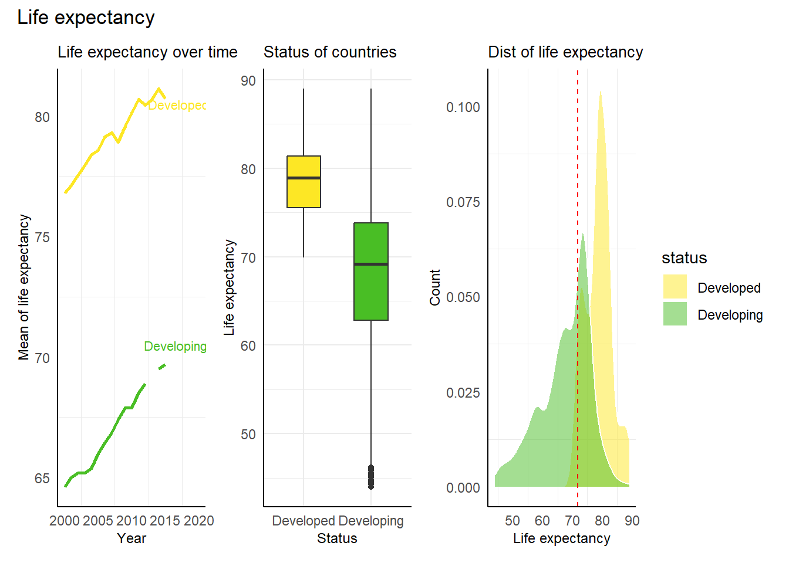
p1 <-
lifeExpectancy %>%
ggplot(aes(x=life.expectancy, y=adult.mortality)) +
geom_point(aes(fill=status), color="black", shape=21) +
geom_smooth(method="lm", formula="y~x", se=F, color="red") +
stat_cor(method="pearson", p.accuracy=0.05, label.x=65,
label.y=600, size=3) +
scale_fill_manual(values=c("#fde725", "#49be25")) +
theme_minimal() +
labs(title="Life expectancy & adult mortality",
x= "Life expectancy", y="Adult mortality") +
theme(axis.line=element_line(color="black"),
legend.position="none",
plot.title=element_text(size=11),
axis.title=element_text(size=9))
p2 <-
lifeExpectancy %>%
ggplot(aes(x=life.expectancy, y=infant.deaths)) +
geom_point(aes(fill=status), color="black", shape=21) +
geom_smooth(method="lm", formula="y~x", se=F, color="red") +
stat_cor(method="pearson", p.accuracy=0.05, label.x=68,
label.y=1300, size=3) +
scale_fill_manual(values=c("#fde725", "#49be25")) +
theme_minimal() +
labs(title="Life expectancy & infant deaths",
x= "Life expectancy", y="Infant deaths") +
theme(axis.line=element_line(color="black"),
legend.position="right",
plot.title=element_text(size=11),
axis.title=element_text(size=9)) +
guides(fill=guide_legend(title="Status"))
p3 <-
lifeExpectancy %>%
ggplot(aes(x=life.expectancy, y=alcohol)) +
geom_point(aes(fill=status), color="black", shape=21) +
geom_smooth(method="lm", formula="y~x", se=F, color="red") +
stat_cor(method="pearson", p.accuracy=0.05, label.x=45,
label.y=15, size=3) +
scale_fill_manual(values=c("#fde725", "#49be25")) +
theme_minimal() +
labs(title="Life expectancy & alcohol",
x= "Life expectancy", y="Alcohol consumption") +
theme(axis.line=element_line(color="black"),
legend.position="none",
plot.title=element_text(size=11),
axis.title=element_text(size=9))
p4 <-
lifeExpectancy %>%
ggplot(aes(x=life.expectancy, y=hepatitisb)) +
geom_point(aes(fill=status), color="black", shape=21) +
geom_smooth(method="lm", formula="y~x", se=F, color="red") +
stat_cor(method="pearson", p.accuracy=0.05, label.x=70,
label.y=120, size=3) +
scale_fill_manual(values=c("#fde725", "#49be25")) +
theme_minimal() +
labs(title="Life expectancy & hepatitis B",
x= "Life expectancy", y="Hepatitis B") +
theme(axis.line=element_line(color="black"),
legend.position = "none",
plot.title=element_text(size=11),
axis.title=element_text(size=9))
(p1 | p2) / (p3 | p4) +
plot_annotation(title="Life expectancy acros variables (Part I)")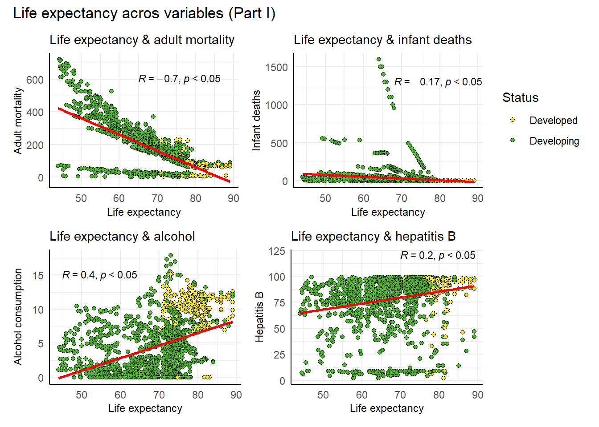
p1 <-
lifeExpectancy %>%
ggplot(aes(x=life.expectancy, y=measles)) +
geom_point(aes(fill=status), color="black", shape=21) +
geom_smooth(method="lm", formula="y~x", se=F, color="red") +
stat_cor(method="pearson", p.accuracy=0.05, label.x=45,
label.y=125000, size=3) +
scale_fill_manual(values=c("#fde725", "#49be25")) +
theme_minimal() +
labs(title="Life expectancy & measles",
x= "Life expectancy", y="Measles (per 1K)") +
theme(axis.line=element_line(color="black"),
legend.position = "none",
plot.title=element_text(size=11),
axis.title=element_text(size=9)) +
scale_y_continuous(labels=scales::comma)
p2 <-
lifeExpectancy %>%
ggplot(aes(x=life.expectancy, y=bmi)) +
geom_point(aes(fill=status), color="black", shape=21) +
geom_smooth(method="lm", formula="y~x", se=F, color="red") +
stat_cor(method="pearson", p.accuracy=0.05, label.x=25,
label.y=70, size=3) +
scale_fill_manual(values=c("#fde725", "#49be25")) +
theme_minimal() +
labs(title="Life expectancy & BMI",
x= "Life expectancy", y="BMI") +
theme(axis.line=element_line(color="black"),
legend.position = "right",
plot.title=element_text(size=11),
axis.title=element_text(size=9)) +
guides(fill=guide_legend(title="Status"))
p3 <-
lifeExpectancy %>%
ggplot(aes(x=life.expectancy, y=underfive_deaths)) +
geom_point(aes(fill=status), color="black", shape=21) +
geom_smooth(method="lm", formula="y~x", se=F, color="red") +
stat_cor(method="pearson", p.accuracy=0.05, label.x=68,
label.y=1750, size=3) +
scale_fill_manual(values=c("#fde725", "#49be25")) +
theme_minimal() +
labs(title="Life expectancy & underfive deaths",
x= "Life expectancy", y="Underfive deaths (per 1K)") +
theme(axis.line=element_line(color="black"),
legend.position = "none",
plot.title=element_text(size=11),
axis.title=element_text(size=9)) +
scale_y_continuous(labels=scales::comma)
p4 <-
lifeExpectancy %>%
ggplot(aes(x=life.expectancy, y=polio)) +
geom_point(aes(fill=status), color="black", shape=21) +
geom_smooth(method="lm", formula="y~x", se=F, color="red") +
stat_cor(method="pearson", p.accuracy=0.05, label.x=70,
label.y=25, size=3) +
scale_fill_manual(values=c("#fde725", "#49be25")) +
theme_minimal() +
labs(title="Life expectancy & polio",
x="Life expectancy", y="Polio immunization (%)") +
theme(axis.line=element_line(color="black"),
legend.position = "none",
plot.title=element_text(size=11),
axis.title=element_text(size=9))
(p1 | p2) / (p3 | p4) +
plot_annotation(title="Life expectancy acros variables (Part II)")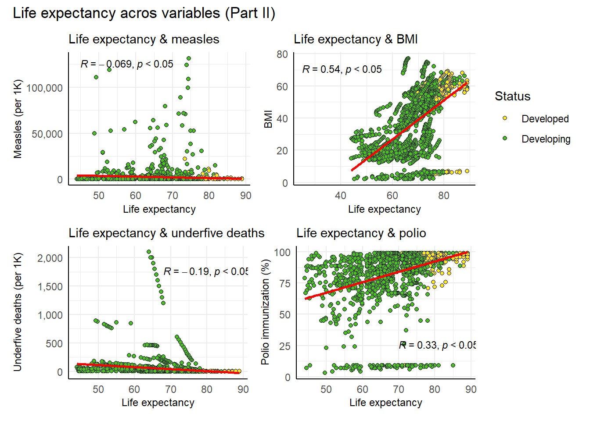
p1 <-
lifeExpectancy %>%
ggplot(aes(x=life.expectancy, y=total.expenditure)) +
geom_point(aes(fill=status), color="black", shape=21) +
geom_smooth(method="lm", formula="y~x", se=F, color="red") +
stat_cor(method="pearson", p.accuracy=0.05, label.x=70,
label.y=17, size=3) +
scale_fill_manual(values=c("#fde725", "#49be25")) +
theme_minimal() +
labs(title="Life expectancy & total expenditure",
x= "Life expectancy", y="Total expenditure (%)") +
theme(axis.line=element_line(color="black"),
legend.position = "none",
plot.title=element_text(size=11),
axis.title=element_text(size=9))
p2 <-
lifeExpectancy %>%
ggplot(aes(x=life.expectancy, y=diphtheria)) +
geom_point(aes(fill=status), color="black", shape=21) +
geom_smooth(method="lm", formula="y~x", se=F, color="red") +
stat_cor(method="pearson", p.accuracy=0.05, label.x=72,
label.y=35, size=3) +
scale_fill_manual(values=c("#fde725", "#49be25")) +
theme_minimal() +
labs(title="Life expectancy & diphtheria",
x= "Life expectancy", y="Diphtheria") +
theme(axis.line=element_line(color="black"),
legend.position = "right",
plot.title=element_text(size=11),
axis.title=element_text(size=9)) +
guides(fill=guide_legend(title="Status"))
p3 <-
lifeExpectancy %>%
ggplot(aes(x=life.expectancy, y=hiv_aids)) +
geom_point(aes(fill=status), color="black", shape=21) +
geom_smooth(method="lm", formula="y~x", se=F, color="red") +
stat_cor(method="pearson", p.accuracy=0.05, label.x=68,
label.y=40, size=3) +
scale_fill_manual(values=c("#fde725", "#49be25")) +
theme_minimal() +
labs(title="Life expectancy & HIV/AIDS",
x= "Life expectancy", y="HIV/AIDS") +
theme(axis.line=element_line(color="black"),
legend.position = "none",
plot.title=element_text(size=11),
axis.title=element_text(size=9),
panel.grid.minor=element_blank())
p4 <-
lifeExpectancy %>%
ggplot(aes(x=life.expectancy, y=gdp)) +
geom_point(aes(fill=status), color="black", shape=21) +
geom_smooth(method="lm", formula="y~x", se=F, color="red") +
stat_cor(method="pearson", p.accuracy=0.05, label.x=40,
label.y=100000, size=3) +
scale_fill_manual(values=c("#fde725", "#49be25")) +
theme_minimal() +
labs(title="Life expectancy & GDP",
x= "Life expectancy", y="GDP (in USD)") +
theme(axis.line=element_line(color="black"),
legend.position = "none",
plot.title=element_text(size=11),
axis.title=element_text(size=9)) +
scale_y_continuous(labels=scales::comma)
p5 <-
lifeExpectancy %>%
ggplot(aes(x=life.expectancy, y=schooling)) +
geom_point(aes(fill=status), color="black", shape=21) +
geom_smooth(method="lm", formula="y~x", se=F, color="red") +
stat_cor(method="pearson", p.accuracy=0.05, label.x=40,
label.y=17, size=3) +
scale_fill_manual(values=c("#fde725", "#49be25")) +
theme_minimal() +
labs(title="Life expectancy & schooling",
x= "Life expectancy", y="Schooling (in years)") +
theme(axis.line=element_line(color="black"),
legend.position = "none",
plot.title=element_text(size=11),
axis.title=element_text(size=9))
(p1 + p2) / (p3 + p4) / (p5 + plot_spacer()) +
plot_annotation(title="Life expectancy acros variables (Part III)")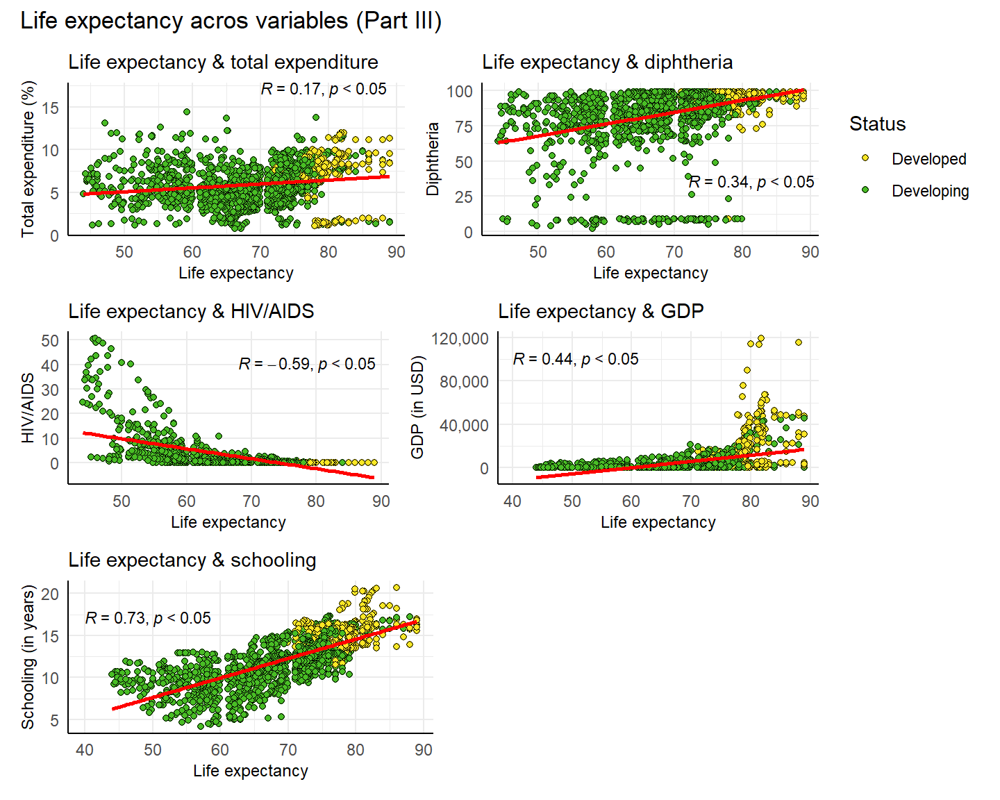
4 Correlation
lifeExpectancy %>%
select_if(is.numeric) %>%
ggcorr(method=c("pairwise", "pearson"), label=TRUE, label_size=3, size=3,
hjust=1, name="Coeficient", low="#49be25",
high = "#fde725")
# get Pearson's correlation coefficients
lifeExpectancy %>%
# choose numeric cols only
select_if(is.numeric) %>%
# use Pearson's r
cor(method="pearson") %>%
# convert result into data frame
data.frame() %>%
# round results
mutate(life.expectancy=round(life.expectancy, 3),
adult.mortality=round(adult.mortality, 3),
infant.deaths=round(infant.deaths, 3),
alcohol=round(alcohol, 3),
hepatitisb=round(hepatitisb, 3),
measles=round(measles, 3),
bmi=round(bmi, 3),
underfive_deaths=round(underfive_deaths, 3),
polio=round(polio, 3),
total.expenditure=round(total.expenditure, 3),
diphtheria=round(diphtheria, 3),
hiv_aids=round(hiv_aids, 3),
gdp=round(gdp, 3),
population=round(population, 3),
schooling=round(schooling, 3)) life.expectancy adult.mortality infant.deaths alcohol
life.expectancy 1.000 -0.703 -0.169 0.403
adult.mortality -0.703 1.000 0.042 -0.176
infant.deaths -0.169 0.042 1.000 -0.106
alcohol 0.403 -0.176 -0.106 1.000
hepatitisb 0.200 -0.105 -0.232 0.110
measles -0.069 -0.004 0.533 -0.050
bmi 0.542 -0.352 -0.234 0.353
underfive_deaths -0.192 0.060 0.997 -0.101
polio 0.327 -0.200 -0.157 0.240
total.expenditure 0.175 -0.085 -0.147 0.215
diphtheria 0.341 -0.191 -0.162 0.243
hiv_aids -0.592 0.551 0.008 -0.027
gdp 0.441 -0.255 -0.098 0.443
population -0.022 -0.015 0.672 -0.029
schooling 0.728 -0.421 -0.214 0.617
hepatitisb measles bmi underfive_deaths polio
life.expectancy 0.200 -0.069 0.542 -0.192 0.327
adult.mortality -0.105 -0.004 -0.352 0.060 -0.200
infant.deaths -0.232 0.533 -0.234 0.997 -0.157
alcohol 0.110 -0.050 0.353 -0.101 0.240
hepatitisb 1.000 -0.125 0.143 -0.241 0.463
measles -0.125 1.000 -0.153 0.518 -0.058
bmi 0.143 -0.153 1.000 -0.242 0.186
underfive_deaths -0.241 0.518 -0.242 1.000 -0.171
polio 0.463 -0.058 0.186 -0.171 1.000
total.expenditure 0.113 -0.114 0.189 -0.146 0.120
diphtheria 0.589 -0.059 0.176 -0.178 0.609
hiv_aids -0.095 -0.004 -0.211 0.019 -0.108
gdp 0.042 -0.065 0.266 -0.100 0.157
population -0.130 0.322 -0.081 0.659 -0.045
schooling 0.215 -0.116 0.555 -0.226 0.350
total.expenditure diphtheria hiv_aids gdp population
life.expectancy 0.175 0.341 -0.592 0.441 -0.022
adult.mortality -0.085 -0.191 0.551 -0.255 -0.015
infant.deaths -0.147 -0.162 0.008 -0.098 0.672
alcohol 0.215 0.243 -0.027 0.443 -0.029
hepatitisb 0.113 0.589 -0.095 0.042 -0.130
measles -0.114 -0.059 -0.004 -0.065 0.322
bmi 0.189 0.176 -0.211 0.266 -0.081
underfive_deaths -0.146 -0.178 0.019 -0.100 0.659
polio 0.120 0.609 -0.108 0.157 -0.045
total.expenditure 1.000 0.130 0.043 0.180 -0.080
diphtheria 0.130 1.000 -0.118 0.158 -0.040
hiv_aids 0.043 -0.118 1.000 -0.108 -0.028
gdp 0.180 0.158 -0.108 1.000 -0.020
population -0.080 -0.040 -0.028 -0.020 1.000
schooling 0.244 0.350 -0.212 0.468 -0.040
schooling
life.expectancy 0.728
adult.mortality -0.421
infant.deaths -0.214
alcohol 0.617
hepatitisb 0.215
measles -0.116
bmi 0.555
underfive_deaths -0.226
polio 0.350
total.expenditure 0.244
diphtheria 0.350
hiv_aids -0.212
gdp 0.468
population -0.040
schooling 1.0005 Fit the model
# fit the model
model <-
lm(life.expectancy~., data=lifeExpectancy)# print model
tidy(model) %>%
mutate(estimate=round(estimate, 5),
std.error=round(std.error, 5),
statistic=round(statistic, 5),
p.value=round(p.value, 5))# A tibble: 16 × 5
term estimate std.error statistic p.value
<chr> <dbl> <dbl> <dbl> <dbl>
1 (Intercept) 55.1 0.820 67.2 0
2 statusDeveloping -0.987 0.353 -2.80 0.00519
3 adult.mortality -0.0182 0.00098 -18.6 0
4 infant.deaths 0.0995 0.0110 9.03 0
5 alcohol -0.0218 0.0338 -0.645 0.519
6 hepatitisb -0.00879 0.00463 -1.90 0.0578
7 measles 0 0.00001 -0.331 0.741
8 bmi 0.0472 0.0058 8.14 0
9 underfive_deaths -0.0751 0.00801 -9.38 0
10 polio 0.00725 0.00537 1.35 0.177
11 total.expenditure 0.0722 0.0422 1.71 0.0876
12 diphtheria 0.0219 0.00616 3.56 0.00039
13 hiv_aids -0.449 0.0186 -24.2 0
14 gdp 0.00007 0.00001 7.69 0
15 population 0 0 -0.494 0.622
16 schooling 1.22 0.0532 23.0 0 TO INTERPRET THE COEFFICIENT OF A LINEAR REGRESSION MODEL” - Determine the sign of the coefficient: The positive or negative coefficient indicates the direction of the relationship between the dependent and independent variables. Positive = dependent variable increases as the independent variable increases. - Determine the magnitude of the coefficient: strength of the relationship between dependent and independent variables. larger magnitude of the coefficient, the greater effect of the independent variable on the dependent one. - Check statistical significance: tells whether the relationship between dependent and independent variable is likely to be real or due to chance. Significant = low probability that the relationship is due to chance.
The intercept of the regression line is 55. This value represents the predicted life expectancy rate with zero unit of predictors.
Because a standard error informs us about the variability of regression estimates, the low SEs above suggest the estimates are more precise.
As shown by the \(R^2\) below, 82% of variance can be explained by the predictors. It means that the performance of the model is good.
# get associated stats
glance(model) %>%
select(r.squared, adj.r.squared)# A tibble: 1 × 2
r.squared adj.r.squared
<dbl> <dbl>
1 0.820 0.819# residual plot
p1 <- model %>%
ggplot(aes(x=.fitted, y=.resid)) +
geom_point(shape=21, color="black", fill="#ff0000") +
geom_hline(yintercept=0, color="blue", linetype="dashed") +
labs(title="Residual vs. fitted values",
x="Fitted values", y="Residuals") +
theme_minimal() +
theme(panel.grid.major=element_blank(),
axis.line=element_line(color="black"),
plot.title=element_text(size=11),
axis.title=element_text(size=9))
# histogram of residuals
p2 <- model %>%
ggplot(aes(x=.resid)) +
geom_histogram(color="black", fill="#ff0000", bins=30) +
theme_minimal() +
theme(panel.grid.major=element_blank(),
axis.line=element_line(color="black"),
plot.title=element_text(size=11),
axis.title=element_text(size=9)) +
labs(title="Distribution of residuals",
x="Residuals")
p3 <- model %>%
ggplot(aes(sample=.resid)) +
stat_qq(shape=21, fill="red", size=2) +
stat_qq_line(color="blue") +
labs(title="Residual vs. normal dist",
x="Theoretical quantiles",
y="Sample quantiles") +
theme_minimal() +
theme(axis.line=element_line(color="black"),
panel.grid.major=element_blank(),
plot.title=element_text(size=11),
axis.title=element_text(size=9))
p1 + p2 + p3 +
plot_annotation(title="Evaluation of the linear regression model")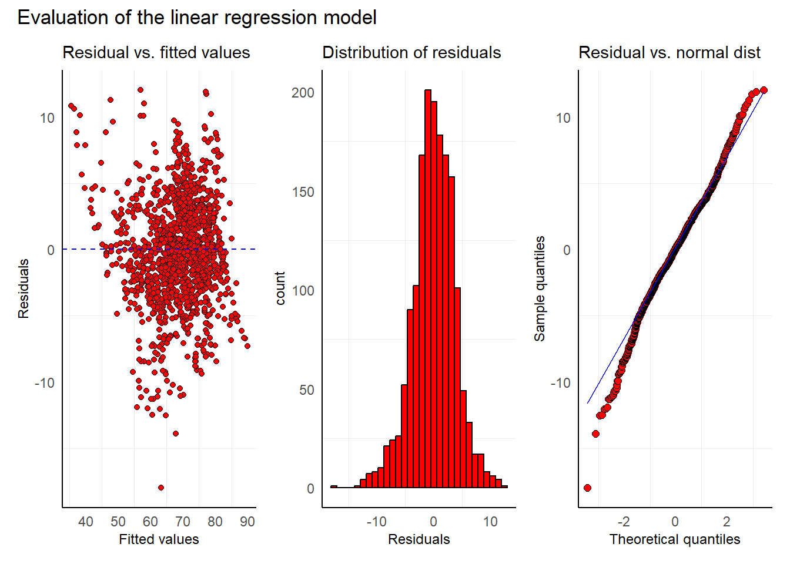
These plots summarize the performance of the linear regression model.
First, the residual plot visualizes the discrepancy between predicted vs residual values. Because no obvious pattern can be seen, the model can indicate the relationship between variables.
Second, the histogram of residuals suggests a normal distribution of the residuals as seen from the bell-shaped tendency.
Third, the Q-Q plot comparing the theoretical (normal) distribution and residuals shows a normal distribution as the points are close to the diagonal line.
# required if standardization is involved
lifeExpectancy %>%
describe() %>%
select(c(mean, sd, median, mean, max)) mean sd median max
status* 1.85 0.35 2.00 2.000000e+00
life.expectancy 69.30 8.80 71.70 8.900000e+01
adult.mortality 168.22 125.31 148.00 7.230000e+02
infant.deaths 32.55 120.85 3.00 1.600000e+03
alcohol 4.53 4.03 3.79 1.787000e+01
hepatitisb 79.22 25.60 89.00 9.900000e+01
measles 2224.49 10085.80 15.00 1.314410e+05
bmi 38.13 19.75 43.70 7.710000e+01
underfive_deaths 44.22 162.90 4.00 2.100000e+03
polio 83.56 22.45 93.00 9.900000e+01
total.expenditure 5.96 2.30 5.84 1.439000e+01
diphtheria 84.16 21.58 92.00 9.900000e+01
hiv_aids 1.98 6.03 0.10 5.060000e+01
gdp 5566.03 11475.90 1592.57 1.191727e+05
population 14653625.89 70460393.40 1419631.00 1.293859e+09
schooling 12.12 2.80 12.30 2.070000e+01https://rstudio-pubs-static.s3.amazonaws.com/534874_2bdd7c6645804fd1b240e1ca3a9eb9d6.html#create-model
https://www.kaggle.com/code/mathchi/life-expectancy-who-with-several-ml-techniques (bagus banget)
4 Ga Jadi
options(dplyr.summarise.inform=F)
lifeExpectancy_copy |>
group_by(year, status) |>
summarise(mean.life.expectancy=mean(life.expectancy)) |>
ggplot(aes(x=year, y=mean.life.expectancy)) +
geom_line(na.rm = T, linewidth=1, aes(color=status)) +
geom_point(shape=16, size=2, na.rm=T, aes(color=status)) +
scale_color_manual(values=c("#fde725", "#49be25")) +
theme_minimal() + xlim(c(2000, 2018)) +
theme(axis.line=element_line(color="black"),
panel.grid.minor=element_blank(),
panel.grid.major.x=element_blank(),
panel.grid.major.y=element_line(color="black", linetype="dashed"),
legend.position = "none") +
annotate("text", x=2016.7, y=80.7, label="Developed",
color="#fde725") +
annotate("text", x=2016.7, y=69.8, label="Developing",
color="#49be25") +
labs(title="Mean of life expectancy over years",
y="Mean of life expectancy", x="Year")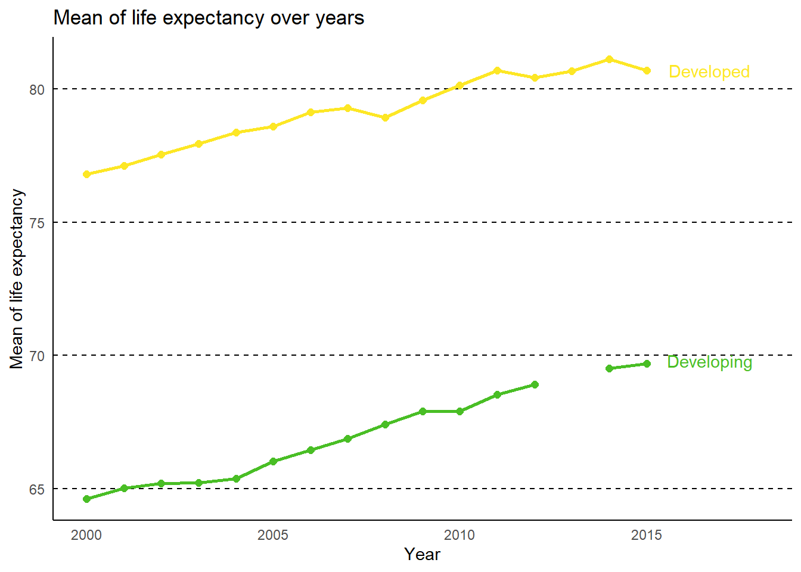
ggplot(lifeExpectancy, aes(x=life.expectancy)) +
geom_histogram(binwidth = 5, fill="orange",
color="white", alpha=0.5) +
geom_vline(xintercept = median(lifeExpectancy$life.expectancy),
color="red", linetype="dashed") +
annotate("text", x=70.5, y=420, label="Median: 71.7",
color="red", angle=90) + theme_minimal() +
theme(axis.line = element_line(color="black")) +
labs(title="Dist of life expectancy", x="Life expectancy",
y="Count")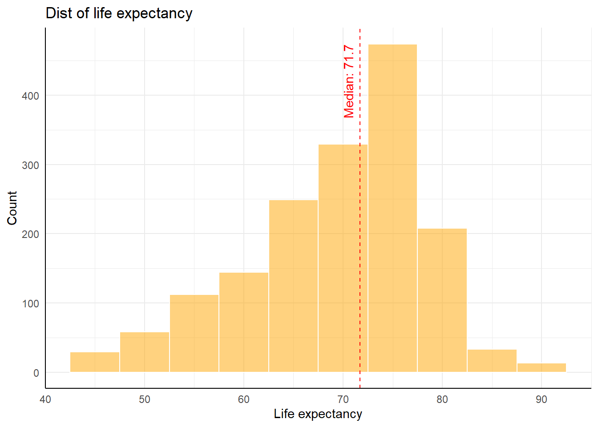
lifeExpectancy %>%
ggplot(aes(x=life.expectancy, y=status)) +
geom_boxplot(aes(fill=status), width=0.5) +
coord_flip() + theme_minimal() +
scale_fill_manual(values=c("#fde725", "#49be25")) +
theme(legend.position = "none",
axis.line=element_line(color="black"),
plot.title=element_text(size=12)) +
labs(title="Developing vs developed countries",
x="Life expectancy", y="Status")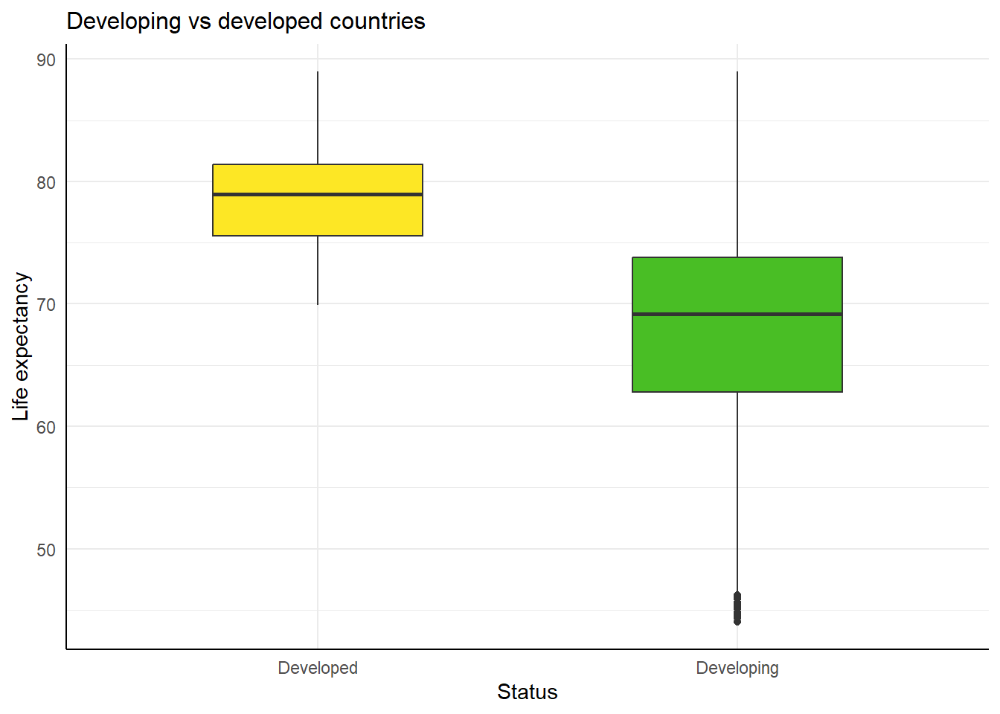
lifeExpectancy_cor <-
lifeExpectancy %>%
select_if(is.numeric) %>%
cor()
heatmap(lifeExpectancy_cor, Colv = NA, Rowv = NA)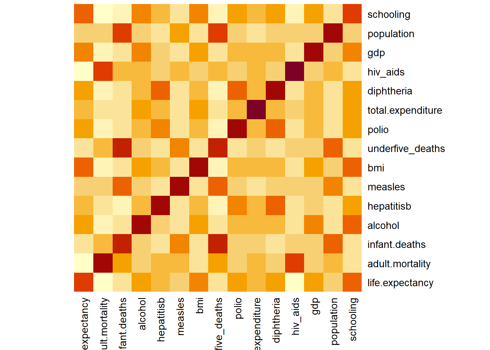
lifeExpectancy %>%
select_if(is.numeric) %>%
pairs()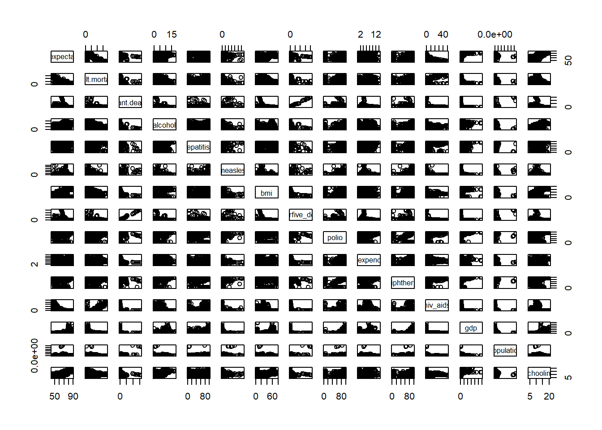
p1 <-
ggplot(lifeExpectancy,
aes(x=life.expectancy, y=gdp, fill=status)) +
geom_point(shape=21) + theme_minimal() +
theme(axis.line = element_line(color="black"),
plot.title = element_text(hjust=1),
legend.position = "bottom") +
labs(x="Life expectancy",
y="GDP (US$)",
tag="A")
p2 <-
ggplot(lifeExpectancy,
aes(x=life.expectancy, y=status)) +
geom_boxplot(aes(fill=status)) +
theme_minimal() + coord_flip() +
theme(axis.line=element_line(color="black"),
legend.position="none") +
labs(x="Life expectancy", tag="B")
(p1 + p2) + plot_annotation(title="Life expectancy rate")
ggplot(lifeExpectancy, aes(x=life.expectancy)) +
geom_density(color="white", alpha=0.5,
aes(fill=status, y=..density..)) +
scale_fill_manual(values=c("#fde725", "#49be25")) +
geom_vline(xintercept = median(lifeExpectancy$life.expectancy),
color="red", linetype="dashed") +
theme_minimal() +
theme(axis.line = element_line(color="black"),
panel.grid.major=element_blank(),
plot.title=element_text(size=10),
axis.title=element_text(size=9)) +
labs(title="Dist of life expectancy",
x="Life expectancy",
y="Count")Warning: The dot-dot notation (`..density..`) was deprecated in ggplot2 3.4.0.
ℹ Please use `after_stat(density)` instead.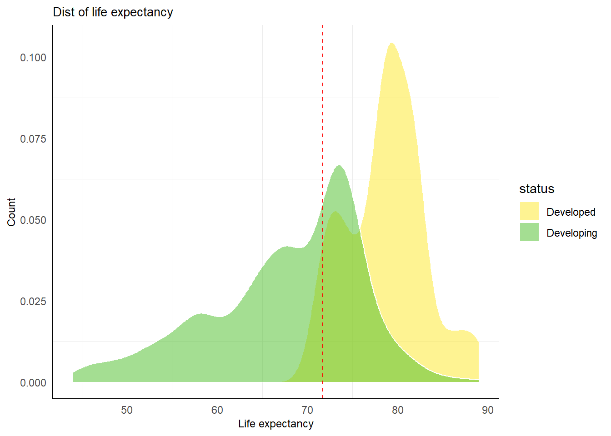
model$residuals %>%
qqnorm()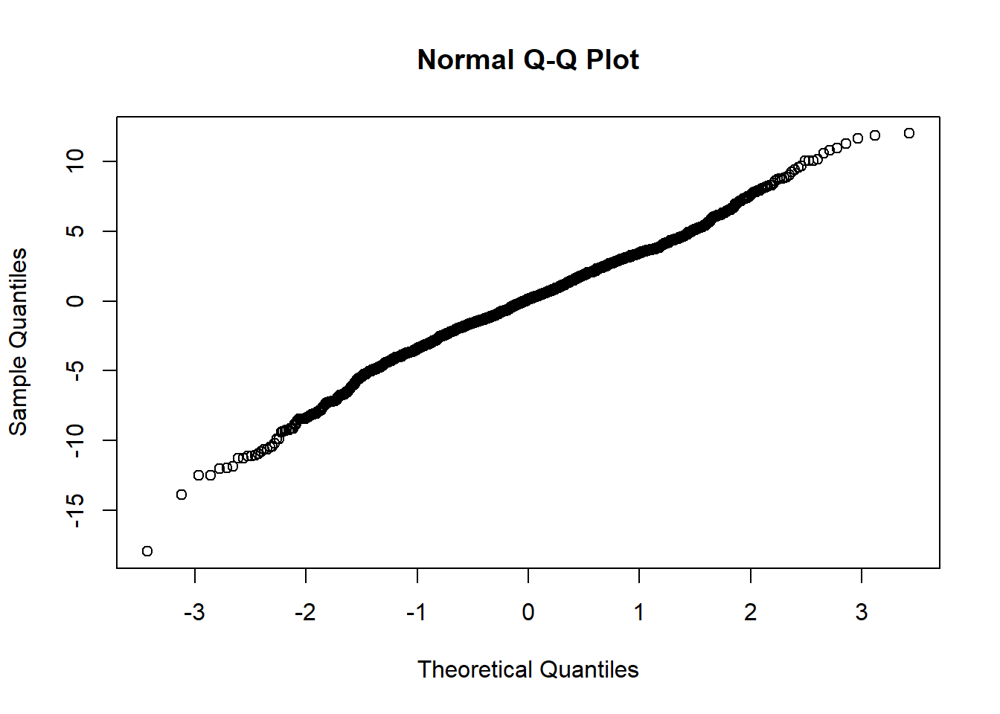
# Generate some random data with a non-linear relationship
set.seed(123)
x <- seq(1, 10, by = 0.1)
y <- x^2 + rnorm(length(x), mean = 0, sd = 3)
# Fit a linear regression model to the data
model <- lm(y ~ x)
# Plot the residual plot
plot(model$fitted.values, model$residuals,
xlab = "Fitted values", ylab = "Residuals",
main = "Residual Plot of Bad Regression Model")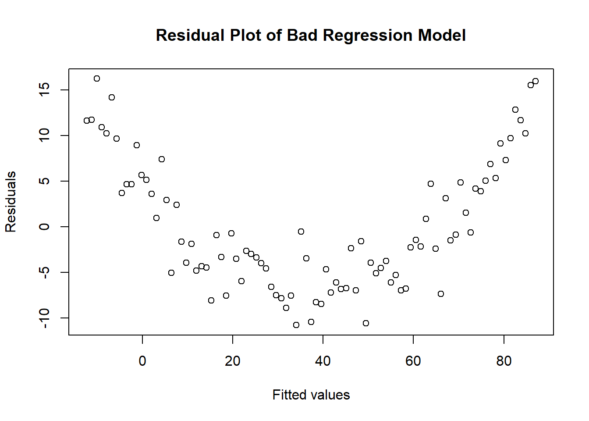